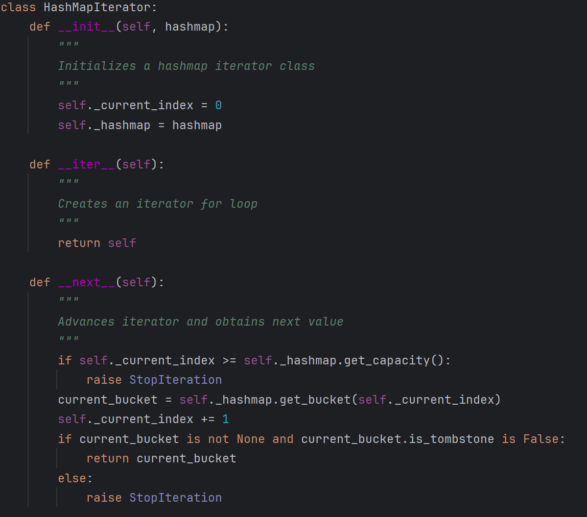
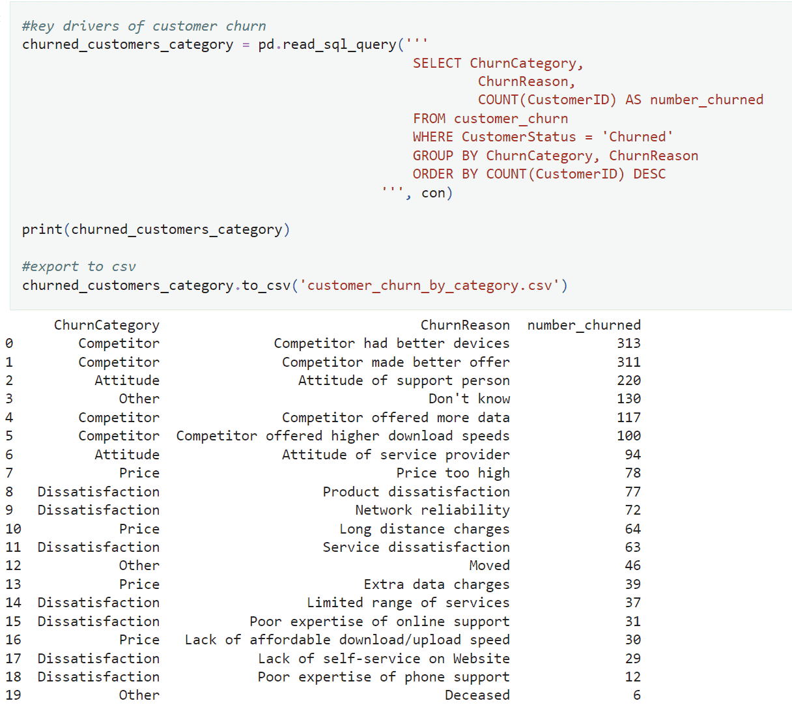
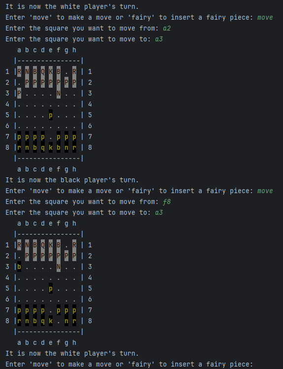
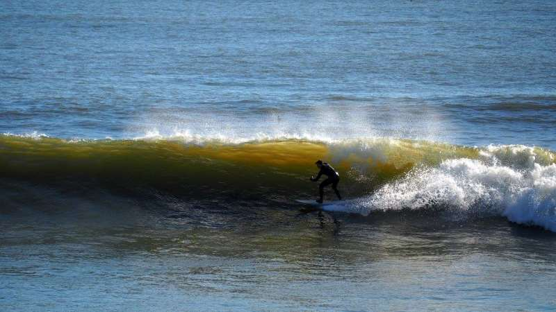
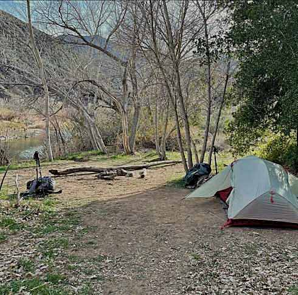

An iterator class for a hashmap data structure.

A SQL query to identify the major drivers of customer churn.

A chess game I built using python.

Surfing in Santa Cruz, CA.

Setting up camp while backpacking in the Sespe Wilderness, CA.